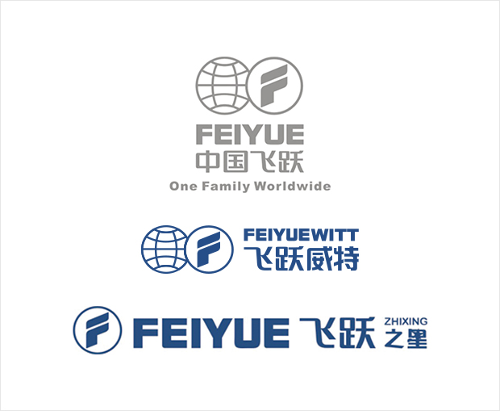
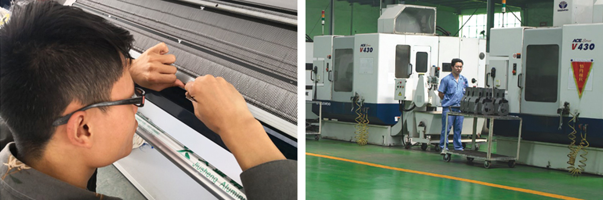

飞跃之路
品牌飞跃：
品牌是企业科学技术、产品质量、服务水准、管理经验、营销策略、市场信誉、企业文化等综合因素的凝结。

品牌是企业科学技术、产品质量、服务水准、管理经验、营销策略、市场信誉、企业文化等综合因素的凝结。综观全球，国际市场的竞争主要是品牌的竞争。品牌战略已成为企业总体发展战略的一个重要的组成部分。
飞跃创办之初，由于没有品牌，很难在市场上立足。刚开始只能采用“借船出海”的办法，由上海“沪佳牌”监制，但借用人家的品牌，总是受制于人。1988年10月，邱继宝向工商局申请注册了自己的品牌，把她取名为“飞跃”，意即让民族工业早日腾飞。至此，中国“飞跃”终于落户台州。邱继宝说过，不管采取什么发展战略，品牌始终是企业发展的一面旗帜，没有自己的品牌，即使全球很多市场没有了贸易壁垒、技术璧垒，我们的产品也难以在这些市场立足。飞跃在发展过程中，把品牌作为企业总体目标依以运作的核心，以“打造飞跃情品，振兴民族工业，争创世界名品牌”为己任，通过强化技术创靳、严格质量管理、完善市场网络、健全售后体系、建设企业文化等各项综合措施培育品牌，使飞跃的核心竞争力不断提升，从而在世界缝制设备领域攻得了一席之地。
如今，飞跃不仅在业内获得各项荣誉，而且还入选“中国十大世界影晌力品牌“。
品质飞跃：
“高质量者得天下。这是飞跃人喊出的一句晌亮口号。为了实现这一理念，飞跃紧紧依靠国际通行标准体系，严格执行全方面质量管理法，形成了完整的质量控制体系，使“飞跃制透”成为一种可靠的品质保证。
“高质量者得天下”，这是飞跃人喊出的一句晌亮口号
为了实现这一理念，飞跃紧紧依靠国际通行标准体系，严格执行全方面质量管理法，形成了完整的质量控制体系，使“飞跃制造”成为一种可靠的品质保证。飞跃在企业内部树立起“尊重质量等于尊重自己”的观念，视下一道工序为用户，聚精会神抓质量，一心一意造精品。1999年是飞跃人值得骄傲的年份。在这一年里，有“划时代产品”之誉的飞跃多功能家用缝纫机被中华人民共和国外文部指定为外交礼品，这标志着飞跃的产品代表着中国缝纫机制造的极高水准。从此，在飞跃人的心目中，“飞跃”已经与国家的荣誉紧紧连接在一起。从此，飞跃人全身心地贯彻“提供情品、追求进步、服务社会”的理念，让每一台飞跃制造的机器成为中国足以自豪的精品。
飞跃坚持不懈地贯彻“精品战略”，目前已通过了ISO9001质量体系、ISO14001环境体系、清洁生产体系和GS、CE.UL.TUV等数十个国家的认证，为进军国际市场领取了“绿色通行证”。

科技飞跃：
科技是推动飞跃发展的重要生产力。飞跃基于产业特点，本着“以产业发展的需要推动技术创新，以技术创新的成果推动产业发展”的要求，将高新技术产业化和产业高新技术化作为经营目标。
科技是推动飞跃发展的重要生产力。飞跃基于产业特点，本着“以产业发展的需要推动技术创新，以技术创新的成果推动产业发展”的要求，将高新技术产业化和产业高新技术化作为经营目标，通过“自主研制、内联院校、外联国际”等渠道大力提高自主创新能力，注重掌握核心技术和自主知识产权以及节能环保，着力提升高技术含量、高附加值、高竟争优势产品的比重，使企业在新一轮国际竞争中抢占先机，赢得了市场主动权。
飞跃实行科研开发优先战略，每年都按一定比例从销售收入中提取研发经费。凡是新技术、新产品研发涉及到的费用，公司都优先保证，从而有力地保证了技术创新体系的正常运转。目前，飞跃依托国家等级技术处、博士后科研工作站，与中国科学院计算所等建立了战略合作关系，从而形成了多层次、开放式的技术研发体系，科技成果转化为生产力的能力提高，领衔制订了一批行业技术标准，进入全国自主创新能力行业十强。在缝制设备领域，飞跃将触角伸向该行业的前沿，率先在业内研制成功数控伺服系统、嵌入式电脑控制系统等，给中国家用缝纫机带来了三次“技术革命”；在智能吊挂系统、电脑横机等高等制造领域，飞跃立足自主创新，掌握了一批专用技术。
技术创新不仅使飞跃的行业地位不断提高、经济效益不断提升，更为重要的是使企业参与国内外竞争的实力不断增强。
人才飞跃：
邱继宝说过，一切都是人创造的，只有一等的人才，才能造出一等的产品，拓展一等的市场，获得一等的效益，办成一等的企业。
邱继宝说过，一切都是人创造的，只有一等的人才，才能造出一等的产品，拓展一等的市场，获得一等的效益，办成一等的企业。飞跃深谙“人和”之道，始终把人力资源作为企业宝贵的资源，把人才工作作为一项战略性的任务，不断改进创新工作机制，坚持抓好人才引进、培养、使用、激励、保障和服务，拥有了一支来自国内外的年龄结构合理、专科结构配套、层级结构科学、综合素质优良的人才队伍。
飞跃依托国等家级技术处和博士后科研工作站等平台，引进了大批高层次人才。同时积极倡导建立“学习型企业”，制定了人才教育培训规划。建立了员工文化学习班，开展文化基础知识和基本技能培训，有计划分层次对员工进行全方面轮训；建立了岗位晋级培训班，开展职务晋升人员和中层干部的生产技术管理培训；与高等院校合作建立了飞跃人才培训基地等。同时，通过“走出去”，提升人才的技术、管理水平。开设了 “飞跃论坛”，邀请国内外知名专家学者授课，拓宽了国际化的视野，提升了人才队伍的整体紊质。
飞跃以人才战略的全球化推进飞跃事业的全球化，以引智模式的多样化推进飞跃产品的国际化，并以此产生的“醉母效应”不断增强企业的市场竞争力。
文化飞跃：
飞跃把以党建为核心的企业文化建设作为一种效率的管理手段和可持续发展战略来看待，井将之上升到文化竞争力的层面。
飞跃把以党建为核心的企业文化建设作为一种效率的管理手段和可持续发展战略来看待，井将之上升到文化竞争力的层面。以“艰苦创业”精神为核心，以“求实创新服务社会、勇争一等”，宗旨为内涵。贯穿“以人为本”的理念，通过创造更加丰富的物质文化优化企业的制度文化，强化“产业报国”的极高理念，使企业文化成为飞跃持续发展的精神支柱。飞跃案例已经编入清华大学、浙江大学等高校和中小学生的教材。
飞跃在发展过程中深刻认识到，过去，民营企业靠历经千辛万苦、说尽千言万语、走遍千山万水、想尽千方百计。通过敢想敢干，艰苦创业泉出了一条血路，而如今必得在“四千精神”的基础上，弘扬千方百计提升品牌、干方百计保持市场、千方百计自主创新、千方百计改进管理的“新四千精神”，尤其依靠转型升级。全方面创新和在应对危机过程中凝炼的新的飞跃精神，不断提升和增强企业的核心竞争力和综合实力。阔出一条科学发展的新路。“十一五”时期是飞跃集团发展史上极不平凡的五年，是大起大落，大转型的五年。五年取得的成绩来之不易，积累的经验弥足珍贵，尤其是创造的情神财富影响深远。
不仅如此，飞跃还积极投身社会文化建设。2007年6月24日第十三届世界奥林匹克收藏博览会在北京开幕，飞跃集团作为历届奥运展合作伙伴应邀出席。国际奥委会终身名誉主席萨马兰奇为飞跃颁发了由国际国委会主席罗格和其本人签名的荣誉证书。2007年6月25日，由飞跃集团和新闻纪录电影制片厂共同出资拍摄的国家第壹邮以北京奥运会筹备为主题的纪录电影《筑梦2008》在全国公映。这是中国纪录电影史上摄制时间极长的影片，在奥运史上也是首部持续七年跟拍一届奥运会筹备全过程的纪录电影。2007年10月3日，由飞跃集团联合摄制的、取材于台州地区改革开放发展史实的长篇电视连续剧《海之门》荣获全国“五个一工程”作品奖。